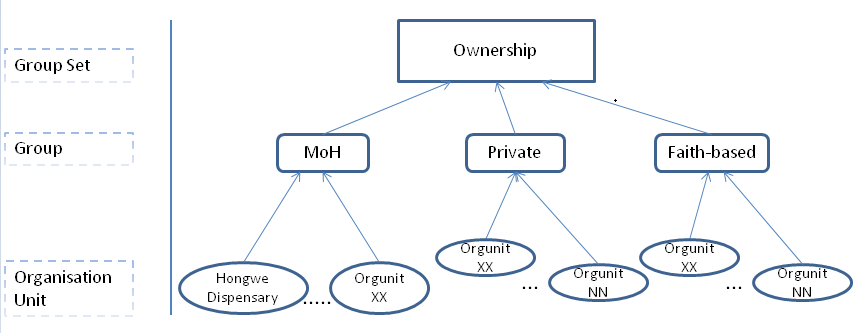
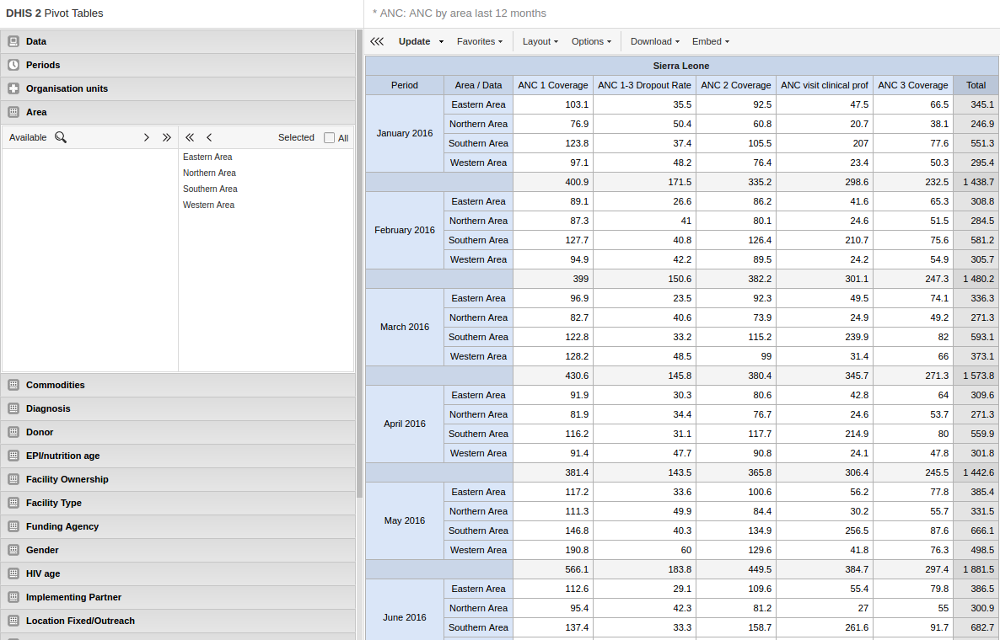
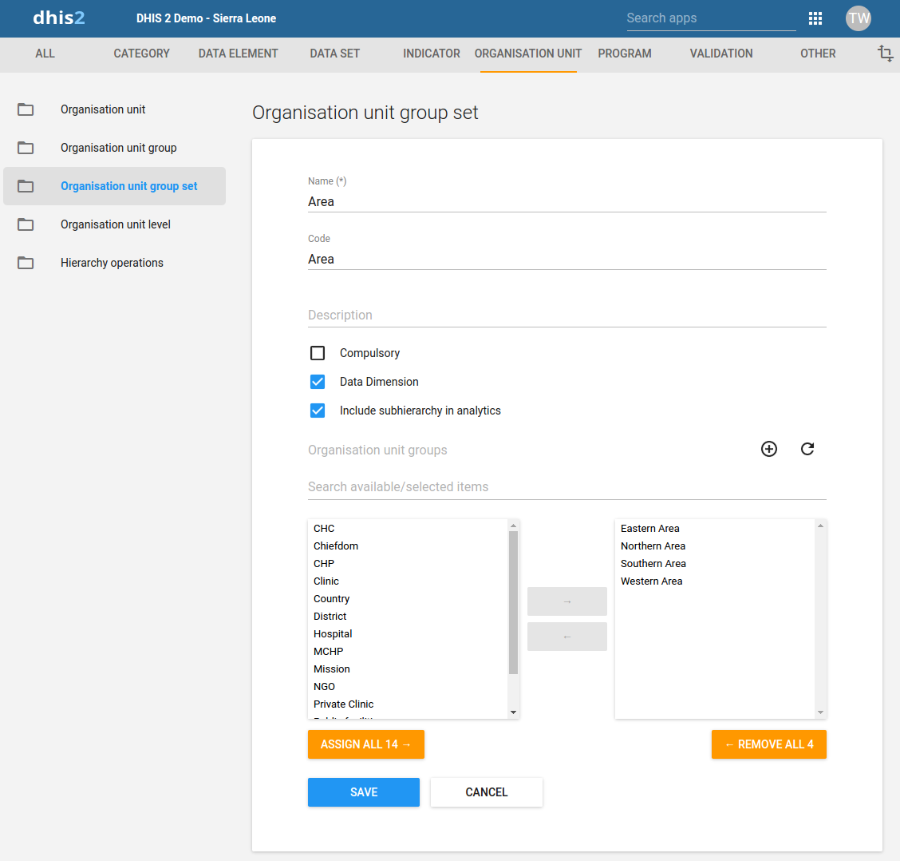

- 9.5.1. [Review ongoing] About organisation units
- 9.5.2. Workflow
- 9.5.3. Create or edit an organisation unit
- 9.5.4. Create or edit an organisation unit group
- 9.5.5. Create or edit an organisation unit group set
- 9.5.6. Assign names to organisation unit levels
- 9.5.7. Move organisation units within a hierarchy
- 9.5.8. [Review ongoing] Close an organisation unit
- 9.5.9. Clone metadata objects
- 9.5.10. Change sharing settings for metadata objects
- 9.5.11. Delete metadata objects
- 9.5.12. Display details of metadata objects
- 9.5.13. Translate metadata objects
In this section you will learn how to:
-
Create a new organisation unit and build up the organisation unit hierarchy
-
Create organisation unit groups, group sets, and assign organisation units to them
-
Modify the organisation unit hierarchy
The organisation unit hierarchy defines the organisation structure of DHIS2, for example how health facilities, administrative areas and other geographical areas are arranged with respect to each other. It is the "where" dimension of DHIS2, similar to how periods represent the "when" dimension.
The organisation unit hierarchy is built up by parent-child relations. In DHIS2, each of these nodes is an organisation unit. A country might for example have eight provinces, and each province might have a number of districts as children. Normally, the lowest levels consist of facilities where data is collected. Data collecting facilities can also be located at higher levels, for example national or provincial hospitals. Therefore, you can create skewed organisation trees in DHIS2.
-
You can only have one organisation hierarchy at the same time.
-
You can have any number of levels in a hierarchy.
Typically national organisation hierarchies in public health have four to six levels.
-
You can create additional classifications by using organisation groups and organisation group sets.
For example to create parallel administrative boundaries to the health care sector.
-
It is recommended to use organisation unit groups to create a non-geographical hierarchy.
-
An organisation unit can only be a member of a single organisation unit group within an organisation unit group set.
-
The organisation unit hierarchy is the main vehicle for data aggregation on the geographical dimension.
-
When you close an organisation unit, you can't register or edit events to this organisation unit in the Event Capture and Tracker Capture apps.
![[Important]](../Resources/important.png)
In the Maintenance app, you manage the following organisation unit objects:
Table 9.10. Organisation unit objects in the Maintenance app
|
Object type |
Available functions |
|---|---|
|
Organisation unit |
Create, edit, clone, delete, show details and translate |
|
Organisation unit group |
Create, edit, clone, share, delete, show details and translate |
|
Organisation unit group set |
Create, edit, clone, share, delete, show details and translate |
|
Organisation unit level |
Edit and translate |
|
Hierarchy operations |
Move organisation units |
The recommended workflow is:
-
Create organisation units.
-
Create organisation unit groups.
-
Create organisation unit group sets.
You add organisation units to the hierarchy one by one, either as a root unit or as a child of a selected organisation unit. You can only have one root unit.
-
Open the Maintenance app and click Organisation unit > Organisation unit.
-
Click the add button.
-
Select which organisation unit your new organisation unit will belong to:
-
Click Parent organisation unit.
-
In the organisation unit tree, locate the parent organisation unit and select it. Your selection is marked in yellow.
Tip Click the arrows to expand the organisation unit tree.
-
Click Select.
-
-
Enter a Name of the organisation unit.
Each organisation unit must have an unique name.
-
Enter a Short name for the organisation unit.
Typically, the short name is an abbreviation of the full organisation unit name. This attribute is often used in reports to display the name of the organisation unit, where space is limited.
-
(Optional) Assign a Code.
In many countries organisation units are assigned a code.
-
(Optional) Type a Description of the organisation unit.
-
Select an Opening date.
The opening dates control which organisation units that existed at a point in time, for example when analysing historical data.
-
If applicable, select a Closed date.
-
In the Comment field, enter any additional information that you would like to add.
-
(Optional) In the URL field, enter a link to an external web site that has additional information about the organisation unit.
-
Enter contact information:
-
Contact person
-
Address
-
E-mail
-
Phone number
-
-
(Optional) Enter Latitude and Longitude.
You must have latitude and longitude values to create maps in the GIS app. Then your organisation units can be represented as points on a map, for example a health facility. Without this information, the GIS app will not work.
It might be more efficient to import coordinates later as a batch job for all organisation units using the Import-Export app. You also use the Import-Export app to create polygons. A polygon is an organisation unit that represent an administrative boundary.
-
If applicable, select Data sets and assign them.
![[Note]](../Resources/note.png)
Note You control whether a user should be able to assign data sets to an organisation unit in the System Settings app:
Open the System Settings app, click Access and select Allow assigning object to related objects during add or update.
-
If applicable, enter custom attributes values, for example HR identifier.
Note You configure the custom attributes in the Maintenance app:
Open the Maintenance app and click Other > Attribute.
-
Click Save.
Organisation unit groups allow you to classify related organisation units into a common theme. You can for example group all organisation units that are hospitals in an Hospital group.
-
Open the Maintenance app and click Organisation unit > Organisation unit group.
-
Click the add button.
-
Fill in the form:
-
Name : Provide a precise, unique and descriptive name for the organisation unit group.
-
Short name : The short name should be less than 25 characters. Typically, the short name is an abbreviation of the full organisation unit name. This attribute is used in certain places in DHIS2 where space is limited.
-
Code
-
Symbol : Select a symbol which will be used to display the organisation unit (points only) when the layer is displayed in the GIS app.
-
-
In the organisation tree, click the organisation units you want to add to the organisation unit group.
You can locate an organisation unit in the tree by expanding the branches (click on the arrow symbol), or by searching for it by name.
The selected organisation units display in orange.
-
Click Save.
Organisation unit group sets allows you to create additional classifications of organisation units. The group sets create new dimensions so that you can make a more detailed data analysis. You an easily filter, organise or aggregate data by groups within a group set.
-
You can have any number of organisation unit group sets.
-
The default organisation unit group sets are Type and Ownership.
-
An organisation unit group set is always exclusive: an organisation unit can't be a member of more than one group in a group set.
You can only select a single organisation group membership for each group set when you create a new organisation unit.
-
You can define whether an organisation unit group set is compulsory or not, which will affect the completeness of the data. Compulsory means that all organisation units must be member of a group in that group set.
|
|
Data completeness |
|---|---|
|
In the Data integrity part of the Data administration app you can verify if you've accidentally assigned the same organisation unit to multiple groups within the same group set. In this app you also find information about organisation units that are not members of a compulsory organisation unit group set. |
-
Open the Maintenance app and click Organisation unit > Organisation unit group set.
-
Click the add button.
-
Fill in:
-
Name : Provide a precise name for the organisation unit group set.
-
Code
-
Description : Describe what the organisation unit group set measures or captures.
-
-
If you want all organisation units to be members of a group within the group set, select Compulsory.
-
(Optional) Select Data dimension.
-
(Optional) Select Include subhierarchy in analytics.
If you select this, a sub-organisation unit will inherit the organisation unit group property from its closest "parent" organisation unit. Any property on the sub-organisation unit will override the inherit value.
If an organisation unit have no associated organisation unit group, the organisation unit can inherit its closest parent's organisation unit group. If none of the parent organisation unit groups have an organisation unit group for a given org unit group set, the result will still be "blank", but if at least one parent has an organisation unit group, sub-organisation unit will inherit it.
include subhierarchy in analytics" is enabled, which means the org units inherit their closest parents org unit group IF the org unit is white (no org unit group associated with it).
-
Select organisation unit groups and assign them.
In the left-hand list, you find the available organisation unit groups. Use the arrows to move selected groups between the two lists.
If there are no organisation unit groups in the left-hand list, click Add new. In the form that opens, create the organisation units group you need. When you're done, click Refresh values.
Note An organisation unit can only be a member of a single organisation unit group within an organisation unit group set.
-
Click Save.
Example 9.10. Classify facilities based on ownership
|  |
You want to analyse data based on the ownership of the facilities. All facilities have an owner so you need to make sure that all organisation units get this classification. To do that you can use the Compulsory option:
-
Create a group for each ownership type, for example "MoH", "Private" and "Faith-based".
-
Assign all facilities in the database to one of these groups.
-
Create an organisation unit group set called "Ownership" and select Compulsory.
-
Assign the organisation unit groups "MoH", "Private" and "Faith-based" to the "Ownership" organisation group set.
Example 9.11. Create parallel dynamic administrative organisation unit structure
|  |
|  |
Group you organisation unit in two ways and aggregate data on these two parallel hierarchies
Use to aggregate data (only in analytics apps)
An additional setting to the organisation unit group set, creates a dynamic "membership" to a organisation unit group set.
You don't change the organisation unit hierarchy
Scalable and dynamic
Dynamic inclusion of hierarchy
Dynamic additional classification
When you add children to an organisation unit, DHIS2 automatically creates a new organisation unit level if necessary. The system also assigns a generic name to this level, for example "Level 5". You can replace the generic name with a contextual name, for example "Country", "Province", "District" or "Health Facility". DHIS2 uses the contextual names anywhere levels are referred to, for example in the GIS app.
-
Open the Maintenance app and click Organisation unit > Organisation unit level.
The loading time of the list depends on the depth of the organisation unit hierarchy tree.
-
For the organisation unit levels you want to modify, type a name.
-
Select the number of offline levels.
Note You configure the default value in the System Settings app:
Open the System Settings app, click General and select a level in the Max offline organisation unit levels list.
-
Click Save.
You can move organisation units within in the hierarchy by changing the parent of a selected organisation unit.
-
Open the Maintenance app and click Organisation unit > Hierarchy operations.
-
In the left-hand hierarchy tree, select the organisation unit(s) you want to move.
Note If the selected organisation unit is has sub-organisation units, all of them move to the new parent organisation unit.
-
In the right-hand hierarchy tree, select which organisation unit you want to move the selected organisation unit(s) to.
-
Click Move x organisation units, where x stands for the number of organisation units you have selected.
Your changes are immediately reflected in the left-hand side hierarchy tree.
When you close an organisation unit, you can't register or edit events to this organisation unit in the Event Capture and Tracker Capture apps.
-
Open the Maintenance app and click Organisation unit > Organisation unit.
-
In the object list, click the options menu and select Edit.
-
Select a Closed date.
-
Click Save.
Cloning a data element or other objects can save time when you create many similar objects.
-
Open the Maintenance app and find the type of metadata object you want to clone.
-
In the object list, click the options menu and select Clone.
-
Modify the options you want.
-
Click Save.
You can assign different rights to the for example a data set based on user groups and user roles.
-
Open the Maintenance app and find the type of metadata object you want to modify.
-
In the object list, click the options menu and select Sharing settings.
-
(Optional) Search for a user group and select it. The user group is added to the list.
-
Change the settings for the user groups you want to modify.
-
Can view : Everyone in the user group can view the object
-
Can edit : Everyone in the user group can view and edit the object
The default setting is that everyone (Public access) can view and edit objects.
-
-
Click Close.
|
|
Note |
|---|---|
|
You can only delete a data element and other data element objects if no data is associated to the data element itself. |
![[Warning]](../Resources/warning.png)
|
Warning |
|---|---|
|
Any data set that you delete from the system is irrevocably lost. All data entry forms, and section forms which may have been developed will also be removed. Make sure that you have made a backup of your database before deleting any data set in case you need to restore it at some point in time. |
-
Open the Maintenance app and find the type of metadata object you want to delete.
-
In the object list, click the options menu and select Delete.
-
Click Confirm.
-
Open the Maintenance app and find the type of metadata object you want to view.
-
In the object list, click the options menu and select Show details.
DHIS2 provides functionality for translations of database content, for example data elements, data element groups, indicators, indicator groups or organisation units. You can translate these elements to any number of locales. A locale represents a specific geographical, political, or cultural region.
| Tip | |
|---|---|
|
To activate a translation, open the System Settings app, click > Appearance and select a language. |
-
Open the Maintenance app and find the type of metadata object you want to translate.
-
In the object list, click the options menu and select Translate.
Tip If you want to translate an organisation unit level, click directly on the Translate icon next to each list item.
-
Select a locale.
-
Type a Name, Short name and Description.
-
Click Save.